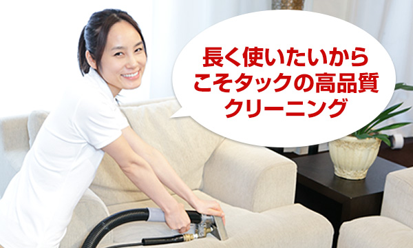
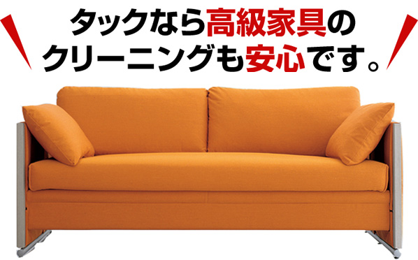

タックオリジナル
「ソファークリーニングPLUS」

ソファークリーニングにおいて大切になるのが、汚れの種類に合わせた洗浄方法を選択する事です。強力な洗剤を使うとことによって生地を傷めてしまっては意味がありません。
タックでは長年の経験に基づき、汚れの程度や種類に合わせた最適な洗浄方法を確立しています。お客様が大切にされているソファーの状態を把握した上で、熟練のスタッフが心をこめて作業にあたらせて頂きます。
タックオリジナル
「ソファークリーニングPLUS」
ソファークリーニングにおいて大切になるのが、汚れの種類に合わせた洗浄方法を選択する事です。強力な洗剤を使うとことによって生地を傷めてしまっては意味がありません。
タックでは長年の経験に基づき、汚れの程度や種類に合わせた最適な洗浄方法を確立しています。お客様が大切にされているソファーの状態を把握した上で、熟練のスタッフが心をこめて作業にあたらせて頂きます。
有名イタリア高級家具ブランドからもソファークリーニングの依頼を受けております。1脚100万円以上する高級ソファーのクリーニングを数多く手掛けたことのある事業者は少なく、当社はご担当者様からご評価頂き継続的に、お取引をしております。「ソファークリーニングをしたことがないからちょっと不安。。。」という方もお気軽にご相談ください。
経験豊富なスタッフがお客さまの疑問点に丁寧にお答えさせて頂きます。
当社では今まで数多くのソファークリーニングを手掛けてまいりました。高級家具ブランドから仕事のオファーを頂いたり、著名ミュージシャンのツアー用ソファーのクリーニングを請け負うなど技術は折り紙つきです。法人様からご家庭まで、ソファークリーニングのご用命はタックまで！
| 対象商品 | 価格 |
|---|---|
| 布張ソファー 2人掛け、3人掛け | 20,000円～ |
| 布張ソファーL字 | 27,000円 |
| 革張りソファー
2人掛け、3人掛け |
30,000円～ |
| 革張ソファー Ｌ字 | 40,000円～ |